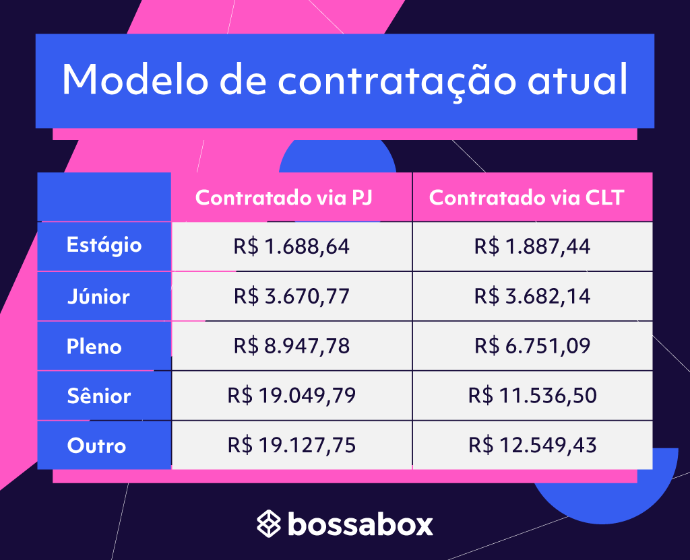

Embora não seja obrigatória uma graduação específica, muitos Web Developers possuem formação em áreas como Ciência da Computação, Sistemas de Informação, ou Análise e Desenvolvimento de Sistemas. Além disso, cursos livres e bootcamps são bastante populares e focam no aprendizado prático.
Web Developers podem atuar em diversos setores, como empresas de tecnologia, agências de marketing digital, startups, ou até mesmo como freelancers. Suas tarefas incluem o desenvolvimento e manutenção de sites, aplicações web, e-commerce e sistemas personalizados.
O plano de carreira pode incluir crescimento para posições como Desenvolvedor Full-Stack, Líder Técnico, Gerente de Projetos de TI ou até mesmo Especialista em determinadas tecnologias. Algumas pessoas também optam por empreender, oferecendo serviços de desenvolvimento por conta própria.
No Brasil, a média salarial de um Web Developer varia de acordo com a experiência e o local de atuação. Um desenvolvedor iniciante pode ganhar entre R$2.000 e R$4.000 por mês, enquanto profissionais experientes podem alcançar salários acima de R$8.000, dependendo da área e da complexidade do projeto.
Desenvolvido por: Lucas Henrique
Data: 22 de novembro de 2024